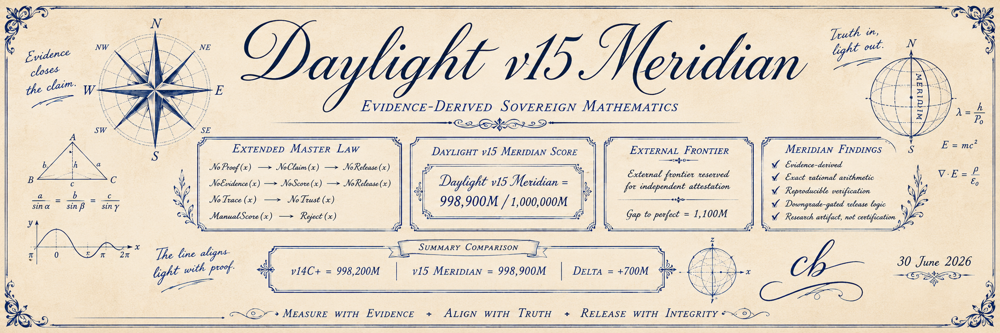

Envelope
Assembly-owned WJSEAL artifact sealing and opening paths.
Boundary: not a general secret-management platform.
Daylight v15 Meridian evidence surface
A public home for defensive machine-code research, sealed artifacts, receipt-bound release, and the evidence that keeps Wuci claims narrow enough to verify.
System shape
Wuci-Ji composes WJSEAL artifacts, authorization receipts, Gate checks, witness bundles, ledger history, signed local installation evidence, and Daylight protocol-state evidence into an inspectable research system.
Evidence lanes
Assembly-owned WJSEAL artifact sealing and opening paths.
Boundary: not a general secret-management platform.Contract checks and deterministic fixture quorum receipts.
Boundary: fixture authority only.Public evidence bundles and local deterministic hash history.
Boundary: not an operated public log service.Artifact legitimacy checks and quantum-risk metadata.
Boundary: not OS containment or PQ security.Signed local install manifest checks and copied root-key proof.
Boundary: no remote-code shell pipeline.Evidence-derived scoring, obligation closure, and refusal of manual scores.
Boundary: research artifact, not external certification.
Wuci-OS image lane
Wuci-OS verifies an operator-supplied musl ISO, records digest evidence, checks live layout, emits QEMU boot plans, and presents a Wuci-native live profile with the WJ prompt identity.
INSTALL starts the automated Wuci install path.wj is the live/demo admin login and prompt identity.Command deck
make wuci-os-testtools/wuci-os final-iso --force --remaster-rootfs --install-suite-packagestools/wuci-noxframe --console --yesVisual evidence


Boundary
Wuci-Ji is not production cryptography, not a general runtime sandbox, not post-quantum secure, not production authority, and not independently audited. A boundary is only treated as enforced when the repository has implementation and tests for that behavior.
Open the full security boundary